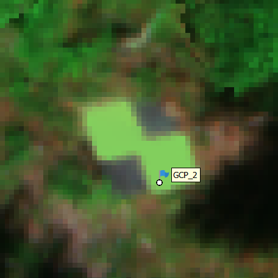
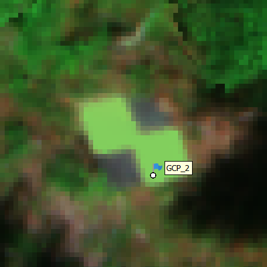

Chapter 4 Preflight Planning
4.1 Achieving positional accuracy on multi-temporal and multi-sensor data collections
For the purposes of this document, we will refer to “alignment” as the process of aligning one flights pictures from one camera to build an orthomosaic. We will use the term “register” to refer to the process of aligning data from different times or sensors. When applying drone-mounted remote sensing tools in the context of forest genetics field trials, high spatial (positional) accuracy and precision is crucial as individual tree remote sensing derived traits need to be linked to the genetic information of each tree. Correctly assigning remotely sensed phenotypes to individual trees is essential since each tree in a progeny trial has a unique identity associated with a known parentage. In turn, this information is used to estimate genetic parameters and to rank and select genotypes. Spatial accuracy becomes even more critical when comparing data from multiple sensors across multiple timepoints to ensure accurate multi-temporal tree metrics. This involves choosing data collection and processing procedures that will allow for accurate image alignment to achieve centimeter-level registration between datasets. The ability to align pictures and register data from different sensors across time is vital to ensure accurate multi-temporal tree metrics. The alignment and registration occur during the data processing stages, however, decisions made in preflight setup and planning can facilitate these processes by minimizing subsequent manual interventions.
4.1.1 Kinematic processing: RTK/PPK
To attain centimeter-level positional precision, either Real-Time Kinematic (RTK) or Post-Processing Kinematic (PPK) methods are employed.
RTK involves real-time correction of positional data during the drone flight, providing immediate high-precision positioning.
To achieve RTK, an on-site GNSS receiver, referred to as a base station (we used either Emlid RS3 or DJI’s D-RTK 2), needs to be near the remote control to stream corrections to the drone.
The sensor then writes the corrected, centimeter precise location to the image meta data.
We recommend placing the base station in as open a space as possible with a clear skyline to limit connection issues.
In cases where cellular service is available, RTK corrections can be streamed from a commercial provider.
PPK, on the other hand, involves correcting positional data after the flight by processing it against reference data and can potentially achieve higher levels of precision, as it is not subject to communication delays.
It does require specific software, we use Emlid Studio or RedCatch RedToolbox.
PPK does not require a base station on site, but it does require a minimum flight time of approximately 10 minutes and a log of GNSS and precise photo timestamp data during the flight.
Before attempting PPK, it is recommended to verify that there is a nearby base station logging GNSS data, ideally within 15km for best results but a maximum distance of 60km.
In Canada, the Canadian Active Control System (CACS) is a free service (with subscription) provided by NRCan that provides GNSS data from a network of regulated base stations.
Many countries have similar options (American version: NOAA CORS Network - National Geodetic Survey) and commercial providers are available for some locations.
We used RTK for our data-collection campaigns, however PPK is an excellent alternative for sites without adequate skyline above the base station.
PPK is also a suitable alternative for flying multiple sites in one area, where a base station could be set up in the morning and used to fly several nearby sites in one day.
Another big draw for PPK is that it does not necessarily require the purchase of a base station.
RTK/PPK precision is reliant on the sensor being used.
For RTK, the sensor must be able to communicate with the drone and write the RTK precise corrections to the image metadata and for PPK the sensor must be able to log GNSS and timestamp data.
Some sensors are unable to utilise RTK or PPK information to register the data.
In these situations, we rely on image-to-image registration where high quality data is acquired from a sensor which has the RTK capacity and then we match the uncorrected data to the corrected data to ensure alignment and registration.
4.1.2 Ground Control Points (GCP)
GCPs are fixed points on the ground of known position that can be seen in the imagery. With RTK/PPK procedures GCPs are not necessary to attain centimeter level spatial precision, however without GCPs we don’t have a centimeter precise gauge to measure the accuracy of data registration. We used 4-6 GCPs per site and built them ourselves using 2-foot square heavy-duty plywood painted as a four-quadrant checkerboard with black and white as seen in Figure 4.1. Our aim was for them to be left on site and be long lasting, but lightweight versions can be purchased or made. GCPs are used in photogrammetry data processing to tie images to known points, to aid in alignment and registration and to verify the accuracy of the results. To use a GCP as a tiepoint, it needs to have a precisely surveyed location. We do this by using RTK, only instead of the base station streaming corrections to the drone, it is streaming corrections to a second GNSS receiver defined as the “rover”. The rover we are using is a second Emlid RS3 on a staff, which can record a GPS position with centimeter accuracy. As with the base and the drone, both the base and rover must have unimpeded skylines to connect to enough satellites to obtain a reliable position (RTK centimeter precision). When a closed canopy prevents this, GCP coordinates can be leveraged from an RGB orthomosaic developed from an RTK/PPK corrected sensor. This alternative method is not as precise as using surveyed GCPs but nevertheless provides check points to measure error during imagery alignment and registry. Without GCPs, especially on sites where canopy closure has occurred, it becomes difficult to measure the precision of the registered images. Some sites do have natural features such as rocks that can be used to estimate error.
Figure 4.1: Aerial view of a GCP at the 12-year old Western redcedar Sandcut site taken with the P1 sensor.
4.1.3 Absolute and Relative Reference with Precise Point Positioning (PPP)
It is important to consider the difference between relative and absolute reference accuracy when considering methodology. When setting up a base station in remote locations, the absolute accuracy is meter-level. This means, that if you set it up at the same spot next week or forty years from now it would only give you a position within approximately 1-5 meters. Relative reference accuracy is the within-survey or flight precision and with RTK or PPK, it is centimeter-level precision. If the objective is to align and register flights under similar conditions within a short timeframe, precise relative accuracy alone may be sufficient. However, for long time series and legacy projects, it is more desirable to have both centimeter-level absolute and relative accuracy. Precise absolute accuracy can be obtained using a variety of methods. If cellular service and a subscription to a provider is available, accurate coordinates can be streamed via RTK. Network RTK providers in Canada are mostly private enterprise, the NRCan RTK Networks page has information on availability. If within range of a base station as outlined above, PPK will provide absolute accuracy. For many experimental trials established in remote forest locations, however, neither of these conditions may be met. Accordingly, another method to secure precise absolute accuracy in remote locations is logging GNSS data from a base station in the field for more than 4 hours and later submitting the log to the free NRCan Precise Point Positioning (PPP) website. The PPP website can provide 3 levels of accuracy depending on the latency period. We have been accepting the rapid, which is accurate to approximately 5 cm when an Emlid RS3 log is submitted more than 12 hours after the end of each day (as quoted on the Emlid site). Whether absolute accuracy and PPP has been a goal or not, if repeated flights are expected, before leaving the site it is important to mark the base station centre point with a metal survey pin as a “monument”, ensuring the base station can be set up over the same position for subsequent flights. For example, if using the DJI DRTK2 system you can enter the known PPP’d base station position into the remote controller for absolute accuracy on all subsequent flights. Similarly, if you are using the Emlid you can enter the PPP’d position in the base station app called Emlid flow. We have developed in house Standard Operating Procedures (SOP) for many of the workflows, and they can be accessed through a GitHub folder and are linked thoughtout this document. See the SOPs folder for SOP_Emlid_RS3 and SOP_M300_Flight for more details on the Emlid and DJI RTK2 setups. Once a site has been set up using precise absolute and relative accuracy, even if the monument or GCPs become inaccessible, accurate positions can be reliably obtained by following similar processes.
4.1.4 Terrain Following on Sites with Elevation Change
Most flight planning software references the elevation at takeoff. In this scenario, the drone flies at a constant altitude relative to the takeoff point, which is acceptable if the terrain remains somewhat constant. However, a constant flight altitude over sloped or variable terrain increases the risk of collision and results in inconsistent imagery across the acquisition. Terrain following flights reference the altitude relative to a Digital Elevation Model (DEM). A DEM is a 2-dimensional georeferenced raster with elevation values. This can be a Digital Surface Model (DSM), which references the surface (canopy) elevation, or a Digital Terrain Model (DTM) which references the bare ground. In situations where the canopy is relatively level for the whole flight a recent DSM is more desirable as this provides the most accurate reference to the canopy, which is our area of interest. This has not been possible for most of the coastal sites we have been using as there are often large (40-60 meter) “leave” trees near the site perimeter which would create greater changes in the flight altitude and reduce consistency therefore, we have been using DTMs for terrain following. With terrain following, the drone automatically adjusts its altitude to remain constant above the DEM, regardless of changes in canopy elevation. This ensures the focal length and overlap remains consistent, preserving data quality and accuracy. Any flights with significant vertical change should be flown with terrain following enabled. For terrain following to be effective, an accurate DEM is required. We use 1 meter resolution DTMs for our Terrain Following flights. DTMs are becoming more available worldwide, and in BC we can access free LiDAR derived DTMs at 1m accuracy from LiDAR BC for many areas of the province. Remote sites outside of these areas require building your own DTM by first flying the site with LiDAR and processing the LiDAR to DTM ahead of the photogrammetry flights. We have made our own DTMs for approximately half of the sites we have flown. Figure 4.2 depicts the difference between a flight plan referencing the takeoff point, and a flight plan using terrain following. The blue lines represent the field of view of the drone mounted sensor. Note the red ovals where the overlap decreases as the ground rises on the top image when the flight elevation remains constant to takeoff.
Figure 4.2: Terrain following on variable topography.
4.2 Site Selection Considerations
Preferred site conditions and considerations when selecting sites prior to undertaking a drone-based phenotyping trial.
Ideal sites:Ideal remote sensing sites are on well maintained, relatively flat ground with juvenile trees, just before the tree crowns begin encroaching on each other. At this stage, competition between trees will not play a significant role, allowing for clearer data collection and analysis. Douglas-fir trees at 4m tall on sites established at 2m spacing are a good example. The imagery below is of a five-year-old Douglas fir trial.

Figure 4.3: Aerial view of a 5 year old Douglas fir trial.
Effects of topography: Warning to take extra care
- Sites on ground with significant elevation change require extra care registering imagery and may require repeated alignment steps with manual intervention. Figure 4.4 below show processed orthomosaic imagery from a multispectral camera with GCP points. The left is from a relatively flat site where all 4 GCPs were within 5cm of the template. The right side shows data collected with the same parameters in similar conditions and processed with the same settings on a sister site with an elevation change of 25m across the site. We flew the site with terrain following enabled to maintain consistant height above the canopy, but the initial error was measured at 28cm. Repeated alignment steps were able to reduce this error to within 10cm for the final product, but this required hours of reprocessing and manual intervention.
 

Figure 4.4: Effect of topograghy on alignment. Left: GCP alignment on flat ground (Error ~4cm). Right: GCP alignment on ground with elevation change (Error ~28cm)
Site Maintenance:Will produce cleaner data.
Sites should be maintained to remove competing herbaceous plants and ingress. On younger sites, summer brush growth around smaller trees will affect the imagery, so should be cut back from the trees. To better understand the impact of brush on metrics derived from imagery (RGB or multispectral) imagine viewing the trees from an aerial perspective and drawing a polygon around the crown: Any brush or ingress that is within that polygon could contribute to incorrect metrics.
Cutting and piling woody debris on heavily overgrown sites can be problematic. To produce accurate tree metrics, we rely on LiDAR sensors to create an accurate DTM. At a heavily overgrown Western redcedar site we made the decision to have the ingress cut out to enable us to see the crowns. The LiDAR derived height compared to traditional measurements was calculated before and after brushing and was found to be significantly affected by the heavy piled debris. Hence the decision on whether to remove competing vegetation should be based on the desired outcomes. Ideally, choose sites that have been well maintained.
Below Figure 4.5 shows an example of the effect of brushing on crown visibility at a moist, high-productivity common-garden trial.
Figure 4.5: Effect of brushing on crown visibility. Left: early August prior to brushing. Right: late August post brushing
Mature Sites:
Mature sites with crown closure require more manual editing for crown delineation.
Example: A 5-year-old site (2500 trees) took 2 days of manual processing, while a 25-year-old site took over a week due to neighbouring branch interference.
Competition in mature sites can obscure smaller trees, reducing visibility in imagery.
Example: At the East Main Douglas fir site, 1612 live trees were surveyed, but only 1514 crowns were delineated, with 96 trees partially obscured.
Juvenile Sites:
Small, thin trees in young sites may reduce confidence in extracted values within crown delineations.
Example: A 3-year-old Douglas-fir trial had difficulty identifying trees under 1m due to nearby brush, with thin canopies further reducing reflectance accuracy.
Similar concerns arose for western redcedar trees under 1.5m.
Site takeoff and landing requirements:
Transport Canada regulations dictate that Visual Line of Sight (VLOS) must be maintained with the drone. A landing zone must be carefully chosen and have the following characteristics.
Take-off/landing safety:The area designated for take-off and landing should be free of overhanging branches and surrounding large trees, which could create connection and safety issues.
Multispectral panel calibration:Multispectral sensors require calibration photos to be taken. These photos are required to be acquired in as large an open area as possible so that the data collected by the DLS correctly mimics the flight conditions. Panel Calibration procedures are detailed here in our SOP_MS_field document.
For RTK flight:The Remote Control (RC) and base station are connected via Wi-Fi for flight. The effective range of this Wi-Fi requires set up near the landing zone and a clear skyline so connectivity can be established and maintained throughout the flight. Consider PPK when this is not feasible.
Should not be on a major road: Dust and traffic create difficulties, as do bystanders.
It is recommended to fly sites from a higher vantage point. At one site, the only area with an acceptable line-of-site was approximately 500 meters uphill from the site. Therefore, we flew from this distance to maintain VLOS.
Confirm that the site is in unrestricted airspace (in Canada) by checking the Drone Site Selection Tool or be willing to apply for permissions. Only pilots with an advanced license can apply for permission to fly in restricted airspace. Permission is granted through the NavDrone portal or app.
4.3 Drone and Sensors: What will I need to purchase and how much will it cost?
The biggest capital investment will be for the sensors and drone. Specific sensors and drones will be dictated by use case.
Our research was looking for sensors with the following attributes:
High quality RGB: capable of producing imagery that can differentiate branches from one tree to the next to delineate crowns and with high enough resolution to distinguish a Douglas fir plot tree from an ingress Western Hemlock. It would also need to have centimeter level positional accuracy.
Multispectral sensor: The multispectral is the most important sensor to purchase and the final project results are based on its performance across a range of conditions. We wanted a multispectral sensor capable of calculating a broad range of Vegetative Indices (VI). There are more options for multispectral sensors if 5 or 6 wavelengths are okay.
LiDAR: for its ability to penetrate through canopy to create accurate DTMs and to calculate structural metrics for each tree.
Thermal: to identify trees suffering from heat stress through thermal variations.
We wanted a drone capable of carrying each of these sensors with the added ability to carry extra weight if a drone mounted sampling system could be implemented. We chose the DJI Matrice 300 RTK (M300), an enterprise drone. The newer model released in 2023 is the M350 with minor upgrades.
We recommend the Emlid RS3 as a base station for RTK/PPK corrections, and a second RS3 as a rover to collect GCPs or stem mapping.
Other options: The DJI Mavic 3 Multispectral is an all-in-one drone with a 4-band multispectral/RGB sensor capable of RTK. While this option does not support LiDAR or other sensors, it could be a viable solution if the limited vegetation indices available through this sensor are acceptable and the sites have enough ground exposure to allow for DTMs to be created with DAP if structural metrics are desired. It does not measure the downwelling radiance which may cause issues if correcting and comparing imagery over time.
The Senterra 6X, is a six-band (five plus RGB) sensor that is also RTK capable. Senterra offers the ability to custom-fit wavelengths. MicaSense also produces several RTK-enabled multispectral sensors worth considering, including the Altum PT, which features five multispectral bands with pan sharpening and an integrated thermal camera.
Table 4.1 shows a breakdown of drone and sensor costs, where newer versions are available, both are listed. The * would be a “wishlist” full set up. This is just the major purchases and doesn’t include general field equipment. The section at the bottom details some options untested by our group.
4.3.1 Hardware Costs
Table 4.1
| Hardware | Purpose | Cost | Detail |
|---|---|---|---|
| *Zenmuse P1, RGB | Sensor | $9,000 | Positional accuracy - Horizontal: 3 cm, Vertical: 5 cm. Ground Sampling Distance (GSD) - 1cm at 80 m elevation |
| Micasense RedEdge-MX Dual | Sensor | $16,000 | Ten band multispectral camera, no longer in production |
| *Micasense RedEdge-P Dual (Panchromatic) | Sensor | $22,500 | Ten band multispectral camera with Panchromatic sharpening |
| Zenmuse H20T, Thermal and RGB | Sensor | $13,350 | Thermal and RGB sensor |
| Zenmuse L1, LiDAR and RGB | Sensor | $11,600 | LiDAR sensor released in 2020 |
| *Zenmuse L2 LiDAR and RGB | Sensor | $16,660 | LiDAR sensor released in 2023, now with 5 returns and better accuracy |
| DJI Matrice (M)300 RTK | Drone | $12,000 | 2020 released DJI enterprise drone with RC, intelligent battery case and one set of batteries |
| *DJI Matrice (M)350 RTK | Drone | $13,500 | 2023 released DJI enterprise drone with RC plus, intelligent battery case and one set of batteries |
| *DJI TB65 batteries | Drone batteries | $1,910 | Pair of the newer model M300/350 batteries. Good for one approximately 30-minute mapping flight including safety margins. At least 4 pairs are recommended for continuous flight when paired with a small generator |
| *DJI TB65 charging station | Charging station | $1,300 | Intelligent batery charging station in a hard carrying case for the newer batteries. |
| DJI DRTK2 | GNSS receiver | $4,200 | GNSS receiver for use as base to stream RTK to drone |
| *Emlid RS3 | GNSS receiver | $3,600 | GNSS receiver for use as base to stream RTK to drone and rover |
| *Emlid RS3 | GNSS receiver | $3,600 | GNSS receiver for use as rover for centimeter precise GCP or stem mapping. |
Table 4.2 are some untested options:
| Hardware | Purpose | Cost | Detail |
|---|---|---|---|
| DJI Mavic 3 Multispectral0 | Sensor, Drone | $5,945 | RTK capable drone, RGB and 4 multispectral wavelengths |
| Senterra 6X | Sensor | $17,120 | RTK capable, 5 multispectral plus RGB, potential to customize wavelengths, but extra price unknown |
| Micasense Altum PT | Sensor | $25,950 | Thermal, and multispectral panchromatic, RTK capable sensor |
An excellent guide for starting costs is detailed in Getting your drone research off the ground
4.3.2 Drone Training in Canada
In Canada, drone laws stipulate that a license is required to fly any drone weighing over 249 grams. There are two types of drone licenses: basic and advanced. The details for each type are available on the Transport Canada (TC) webpage. Flights conducted in uncontrolled airspace only require a basic license. If you have experienced pilots on staff and are only flying basic operations, the extra training might not be needed, however, we found the extra training and work for the advanced course to be beneficial and we highly recommend the Indro Robotics training which can be tailored to fit most use cases. To prepare for the basic license The Don Drones On website has an excellent video.